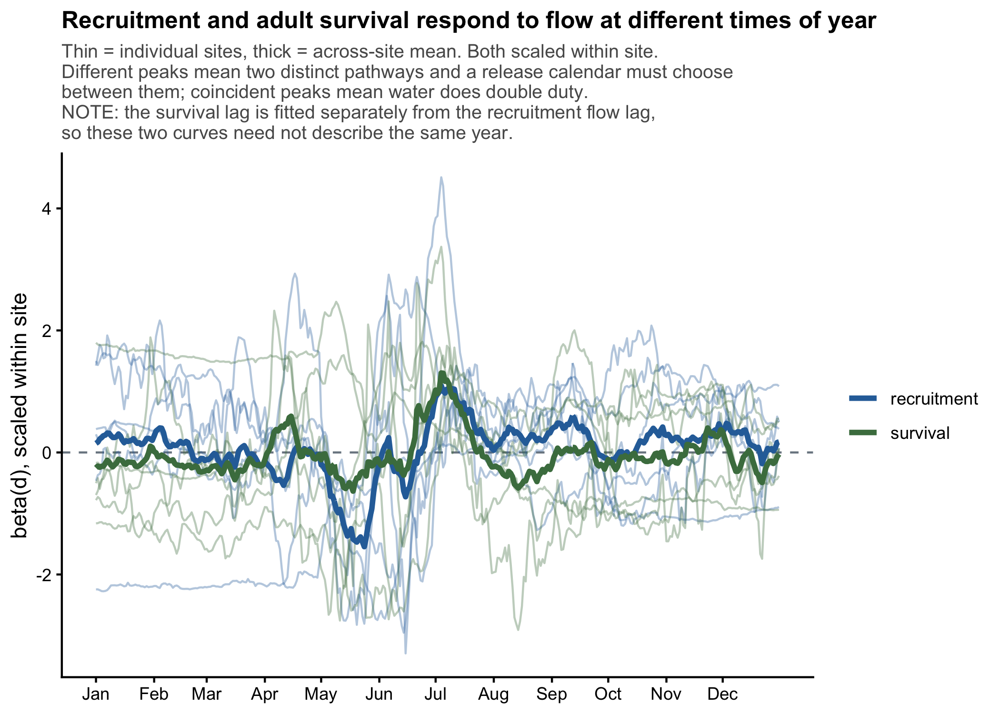
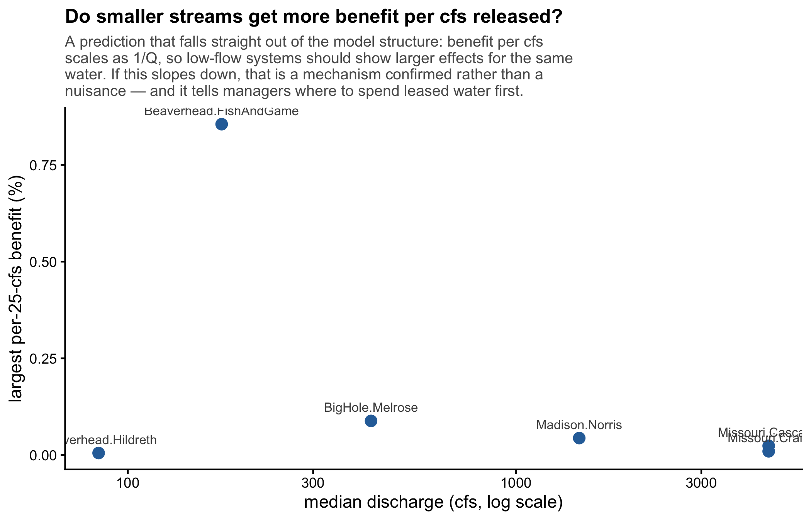

A single site gives ~43 annual observations. That is not enough to
resolve a 365-point curve with confidence, and
results_by_site.html says so explicitly for each site.
What multiple sites buy is not more precision at any one site — it is the ability to ask whether a feature recurs. Three outcomes, and they mean different things:
| Pattern across sites | Interpretation |
|---|---|
| Same β(t) feature, same sign, most sites | Evidence for a shared biological mechanism |
| Feature present but shifted in timing | Mechanism is real, cued locally (elevation, thermal regime, run timing) |
| Feature at one or two sites only | Local hydrology or sampling noise. Do not build a mechanism on it. |
This section reports which of those three applies, for each part of the year, for recruitment and for survival separately.
The reasoning above assumes every site’s β(d) describes the same biological year. That assumption fails whenever the integrated population model selected different flow lags at different sites, and it did: a lag equal to the recruit lag puts the hydrograph in the spawning year, while a shorter lag puts it in the age-0 rearing year.
Day 200 under a spawning-year lag is the summer before spawning. Day 200 under a rearing-year lag is the first summer of a fish’s life. Those are different life stages, so agreement between them is not evidence of a shared mechanism — and disagreement is not evidence against one.
Sites are therefore grouped by lag below, and agreement is computed within groups only.
| site | flow_lag | hypothesis |
|---|---|---|
| Madison.Norris | 3 | spawning-year conditions |
| Missouri.Cascade | 2 | age-0 rearing-year conditions |
| Missouri.Craig | 3 | spawning-year conditions |
| BigHole.Melrose | 2 | age-0 rearing-year conditions |
| Beaverhead.FishAndGame | 2 | age-0 rearing-year conditions |
| Beaverhead.Hildreth | 2 | age-0 rearing-year conditions |
More than one flow lag is in use. The figures below separate sites by lag. Do not read across the groups: a feature appearing in both is not corroboration, because the two curves describe different years of the same fish’s life. If the manuscript needs a single across-site statement, it has to be made within one lag group, and the other group reported separately.

Across-site mean curves peak on 04 Jul for recruitment and 04 Jul for survival, and are correlated at r = 0.51 across the year.
The two pathways move together. A single release window serves both — the best case for management, and worth stating plainly.
If the flow response differs among sites, the next question is whether it differs systematically. Candidate explanations, in rough order of how testable they are with what you have:
| Candidate | Why it could matter | Data needed |
|---|---|---|
| Degree of regulation | A dam-controlled reach has a compressed natural flow range, so fish may be less flow-limited | Reservoir presence, distance downstream |
| Elevation / thermal regime | Sets spawning and emergence timing, which shifts β(t) horizontally | Site elevation, summer temperature |
| Baseline discharge | Determines how much a given release changes proportional flow — see Proposal 02 | Already computed: per-day climatology |
| Channel confinement | Governs whether high flow means habitat gain or scour | Geomorphic classification |
| Irrigation withdrawal | Sets whether summer low flow is naturally or anthropogenically limiting | Diversion records |
None of these is in the pipeline yet, because none is in the data folder. With 14 sites you can support one, possibly two site-level covariates — not five. Pick the one with the strongest mechanistic prior before fitting, and treat the rest as future work. Fourteen sites and five covariates is the same overfitting problem as 43 years and a 365-point curve, one level up.

## > **NOT AVAILABLE** — run `R/05_validate.R`.8 of 24 sites clear the gate.
A mixed result is the most interesting outcome and the hardest to write up honestly. The temptation is to report the sites that passed. Resist it: with 14 tests at α = 0.05 you expect about one pass by chance, so a subset of passes is not evidence that those particular sites are special.
The defensible framing is the pooled effect plus the between-site SD. A large mean with large between-site variation is a real finding — on average yes, but not everywhere — and it is exactly what a basin-scale manager needs to know.
Draft the synthesis around whichever of these the results actually support. None should be asserted without the corresponding figure above backing it.
Which vital rate is flow-limited, and when. If recruitment β(t) is structured and survival β(t) is flat, brown trout population dynamics here are recruitment-driven and adult survival is buffered against hydrology. That is a statement about where density dependence and environmental forcing act, and it has direct consequences for what management can and cannot change.
Whether the limiting window is natural or anthropogenic. A negative spring-runoff effect is a natural-disturbance signal (fry displacement, redd scour). A positive summer base-flow effect in a diverted system is an anthropogenic-limitation signal. These call for opposite management responses: the first argues for accommodating natural variability, the second for augmenting it.
Whether timing is cued locally. If the β(t) shape is shared but shifted between sites, the mechanism is real and phenological — and the shift should correlate with elevation or thermal regime. That is a testable prediction from this analysis, and a good final paragraph.
The resolution limit is itself a result. If 43 years cannot resolve finer than a ~60-day window, that bounds how precisely any flow-management prescription can be specified from observational data at this sample size. Saying so quantitatively is more useful to the field than a spuriously precise date, and it motivates the experimental releases that would resolve it.
State these in the manuscript. A reviewer will find them anyway, and finding them already stated is a different experience from finding them omitted.
methods.html covers the circularity guard; the residual
risk is that IPM structural assumptions are shared across sites and
could induce shared β(t) structure.Rendered 2026-08-11 16:01 · R version 4.5.1 (2025-06-13) ·
commit a3b476e
Every number on this page is read from
output/. Sections showing NOT AVAILABLE
mean that stage has not been run.